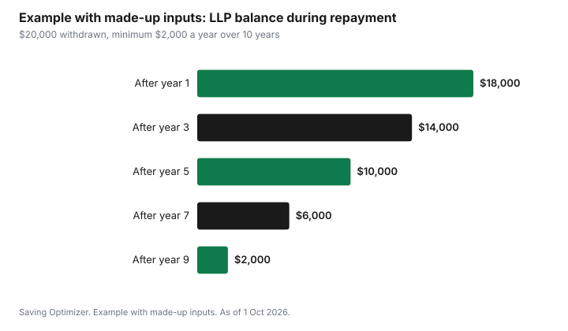

Education · Canada
Lifelong Learning Plan: Using Your RRSP to Pay for School in Canada
The Lifelong Learning Plan (LLP) lets you take up to $10,000 a year, and $20,000 in total, out of your RRSP without paying tax to fund full-time education for you or your spouse or common-law partner in Canada, as of 1 October 2026. It is not free money: you must repay what you withdraw into your RRSP over 10 years, usually starting in the fifth year after your first withdrawal, and any amount you do not repay on schedule is added to your taxable income for that year. For an adult going back to school, it can bridge a gap between savings and tuition, but it competes with interest-free federal student loans and costs you years of tax-sheltered growth, so it is worth comparing before you fill out the form.
Key takeaways
- Limits: $10,000 per calendar year and $20,000 in total per participation.
- Who: you or your spouse or common-law partner, enrolled full time in a qualifying program at a designated educational institution. It cannot be used for your children.
- How: Form RC96 for each withdrawal, given to your RRSP issuer. No tax is withheld when the conditions are met.
- Repay: at least one-tenth of the total each year for 10 years, designated on your tax return.
- Missed repayments are added to your income and taxed, so the plan works only if you keep the schedule.
- Example with made-up inputs: $20,000 withdrawn over two years means at least $2,000 a year of repayments.
How the Lifelong Learning Plan works
Normally, money you take out of an RRSP is added to your income and taxed, and your financial institution withholds tax up front. Under the LLP, the CRA treats the withdrawal as a loan from your own RRSP. As long as you meet the conditions, nothing is withheld and nothing is added to your income. You then put the money back over 10 years. The repayments are RRSP contributions, but you do not get a deduction for them, because you never paid tax on the withdrawal.
You can withdraw in more than one calendar year, as long as you stay within $10,000 per year and $20,000 in total. You can keep making withdrawals until January of the fourth year after the year of your first withdrawal. Once you have repaid everything, you can participate again.
| Rule | Detail |
|---|---|
| Yearly limit | $10,000 per calendar year |
| Total limit | $20,000 per participation |
| Who can be the student | You, or your spouse or common-law partner (not children) |
| Program | Qualifying educational program at a designated educational institution, generally at least 3 consecutive months with at least 10 hours a week of courses or work |
| Enrolment | Full time, or part time if the student meets the disability conditions |
| Form | RC96, one for each withdrawal |
| Repayment | At least one-tenth a year over 10 years |
| Missed repayment | The shortfall is added to your income for that year |
Who qualifies
You must be a resident of Canada and have money in an RRSP you can withdraw from. Locked-in plans and some group plans do not allow withdrawals, so check with your employer or issuer. The student, either you or your spouse or common-law partner, must be enrolled full time in a qualifying educational program at a designated educational institution, or have received a written offer to enrol before March of the year after the withdrawal. Most Canadian universities and colleges are designated, and some institutions outside Canada are too. If the student has a disability that meets the CRA's conditions, part-time enrolment can qualify.
The program generally has to last at least three consecutive months and require at least 10 hours a week of courses or work in the program. Short certificate courses, evening classes and most self-paced online courses may not qualify. Confirm with the school that it can certify full-time enrolment, because the CRA can ask for proof.
How to make a withdrawal
- Confirm the student's enrolment or written offer and that the program qualifies.
- Decide how much you need this calendar year, up to $10,000.
- Complete Form RC96, Lifelong Learning Plan Request to Withdraw Funds from an RRSP, and give it to your RRSP issuer.
- The issuer pays the amount without withholding tax and issues a T4RSP slip showing the LLP withdrawal.
- Report the withdrawal on your return for that year; the LLP portion is not taxed if the conditions are met.
- Repeat in a later calendar year if you need more, up to the $20,000 total.
One timing trap: if you contribute to an RRSP and then withdraw that money under the LLP within the 89-day period before the withdrawal, you may lose some or all of the deduction for that contribution. If you are planning both, contribute well ahead of the withdrawal, or withdraw from money that has been in the plan longer.
Repaying the LLP
The latest repayment can start is the fifth year after your first withdrawal. It usually starts earlier if the student stops qualifying: if the student is not a qualifying student for at least three months during the year two years in a row, repayment usually starts in the second of those years. The CRA shows your LLP balance and the minimum required repayment on your notice of assessment each year and in CRA My Account.
Each year of the repayment period, you must repay at least one-tenth of the total you withdrew. You make the repayment by contributing to your RRSP during the year or in the first 60 days of the next year, then designating it as an LLP repayment on Schedule 7 of your return. You can repay more than the minimum, which reduces later minimums. If you repay less than the minimum, the shortfall is added to your income for that year and taxed at your marginal rate.
| Year of repayment | Minimum repayment | Balance after |
|---|---|---|
| 1 | $2,000 | $18,000 |
| 2 | $2,000 | $16,000 |
| 3 | $2,000 | $14,000 |
| 4 | $2,000 | $12,000 |
| 5 | $2,000 | $10,000 |
| 6 to 10 | $2,000 each | $0 after year 10 |

What happens if the student does not finish
As of 1 Oct 2026, the CRA's LLP pages say that if the student leaves the program before April of the year after the withdrawal and 75% or more of the tuition was refundable, the withdrawal must be cancelled: you repay it to your RRSP and send Form RC97, generally by 31 December of the year after the withdrawal. Any amount you do not repay is included in your income for the year you withdrew it. If less than 75% of the tuition was refundable, the withdrawal stays under the LLP and is repaid over 10 years. Leaving the program can also bring the repayment start forward, as described above. The same cancellation applies if the student had a written offer to enrol before March of the following year but did not enrol in time. Keep records of enrolment and fees.
LLP compared with other ways to pay for school
The LLP is one option among several. For many adults, the cheapest money for school is a grant, then an interest-free federal student loan, then savings, then the LLP. A regular RRSP withdrawal is usually the most expensive, because it is taxed and the contribution room is gone for good.
| Option | Cost | Main catch |
|---|---|---|
| Grants (Canada Student Grant, provincial grants) | Nothing to repay | Income and program tests; may not cover all costs |
| Federal student loan | Interest-free on the federal portion | Must repay after a six-month grace period; some provinces charge interest on their portion |
| Lifelong Learning Plan | No tax if repaid; lost RRSP growth | 10-year repayment; shortfalls taxed |
| Regular RRSP withdrawal | Taxed as income; withholding of 10%, 20% or 30% outside Quebec depending on amount | Contribution room is not restored |
| TFSA withdrawal | No tax; room comes back the next year | Uses savings you may need for emergencies |
| RESP (for a child, not yourself) | Educational assistance payments taxed in the student's hands | Only if an RESP was opened for the student |
The Canada Student Grant guide explains 2026-27 amounts and income thresholds. Adult learners with low income in the previous year can qualify for more than they expect, which may reduce how much you need from your RRSP.
The hidden cost: lost growth
Money out of your RRSP is not growing tax-sheltered. If you withdraw $20,000 and repay $2,000 a year, part of the money is outside the plan for up to 14 years. The cost depends on what the investments would have earned, which nobody can know in advance. For someone early in their career who expects higher income after school, that cost can be worth it. For someone close to retirement, it may not be.
Example with made-up inputs: an adult going back to college
These numbers are an example with made-up inputs. They are not real tuition or income figures. Priya, 34, has $28,000 in her RRSP and is starting a two-year full-time college program. Her costs are $9,000 a year for tuition and books on top of rent she already pays.
| Source | Year 1 | Year 2 |
|---|---|---|
| Grants | $3,000 | $3,000 |
| LLP withdrawal (January) | $6,000 | $6,000 |
| Total for school | $9,000 | $9,000 |
Priya withdraws $12,000 in total, below both limits. Her first withdrawal was in year 1, so repayment generally starts in year 5 at $1,200 a year, unless she stops being a qualifying student for two years in a row first. After graduating she sets up a monthly RRSP contribution of $100, which covers the minimum, and designates it on Schedule 7 each spring.
A plan before you withdraw
- Apply for grants and student aid first; check what is interest-free.
- Confirm the program qualifies and that you can prove full-time enrolment.
- Withdraw only what you need for each calendar year, up to $10,000.
- Avoid contributing to your RRSP in the 89 days before a withdrawal.
- Note the year your repayment starts and set up an automatic contribution early.
- Designate repayments on Schedule 7 every year.
| Item | Amount or date |
|---|---|
| Total cost of program | |
| Grants and aid | |
| LLP withdrawal year 1 | |
| LLP withdrawal year 2 | |
| First repayment year | |
| Monthly contribution to cover repayments |
Common mistakes
- Using the LLP for a child; it is only for you or your spouse or common-law partner.
- Forgetting to designate repayments on Schedule 7, so they count as ordinary contributions and the shortfall is taxed.
- Withdrawing contributions made in the 89 days before the withdrawal.
- Choosing a program that does not meet the full-time or duration conditions.
- Skipping grants and interest-free loans that would have cost less.
Sources
- Canada Revenue Agency, Lifelong Learning Plan (LLP): withdrawal limits, conditions and repayment (canada.ca), as of 1 Oct 2026.
- Canada Revenue Agency, Lifelong Learning Plan pages: who can participate, participating (withdrawals, Form RC96, 89-day rule), repayments, and cancelling a withdrawal (Form RC97) (canada.ca/en/revenue-agency/services/tax/individuals/topics/rrsps-related-plans/lifelong-learning-plan.html), as of 1 Oct 2026.
- Canada Revenue Agency, RRSP withdrawals and withholding tax rates (canada.ca), as of 1 Oct 2026.
- All amounts in the repayment and back-to-school examples are made-up inputs.
Frequently asked questions
How much can I take out of my RRSP under the Lifelong Learning Plan?
Up to $10,000 per calendar year and $20,000 in total per participation, as of 1 Oct 2026, for full-time education for you or your spouse or common-law partner.
Do I pay tax on a Lifelong Learning Plan withdrawal?
No, if you meet the conditions and repay on schedule. No tax is withheld when you use Form RC96. Any required repayment you miss is added to your income for that year.
When do I have to start repaying the LLP?
Generally in the fifth year after your first withdrawal, or earlier if the student does not qualify as a full-time student for at least three months in each of two consecutive years. You repay at least one-tenth of the total each year for 10 years.
Can I use the Lifelong Learning Plan for my child's education?
No. The LLP is only for you or your spouse or common-law partner. For children, an RESP is the registered plan designed for education savings.
Researched and drafted with AI assistance and fact-checked against official Canadian sources. How we create content.
Disclosure: Saving Optimizer may earn a commission if a partner link is added later, such as an RRSP account or tax software offer type. No partnership with any financial institution is claimed on this page, and no provider is ranked. Education only; this is not tax advice.